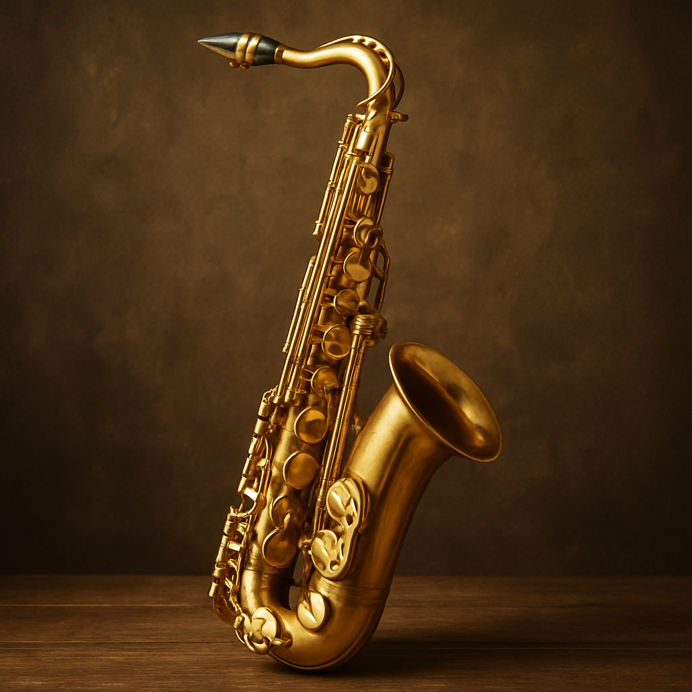

Técnicas mais difíceis(master level) de cada forma que me expresso na música
Saxofone
- Overtones
- Articulação perfeita
- Som potente sem ser estridente nem apagado
- Articulação sem vazão de ar excessiva
- Respiração circular
Canto
- Graves potentes
- Overtones
- Acordes
- Dicção perfeita
- Volume extremamente potente
Beatbox
- Sons eletrônicos
- Bass
- Subwoofer
- Ritmo ultra rápido
- Fazer múltiplos sons